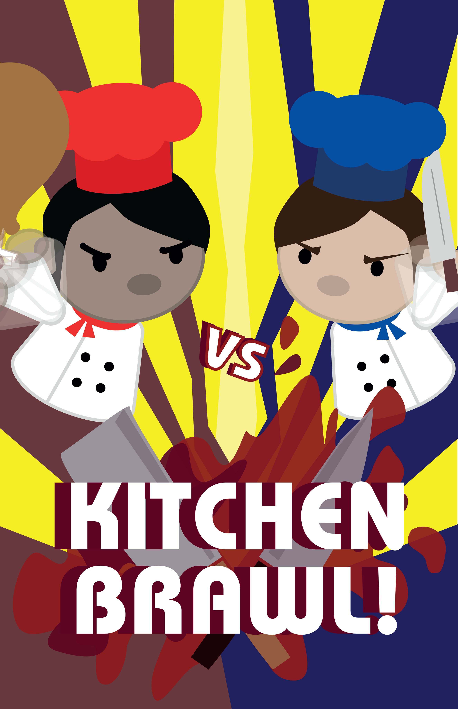
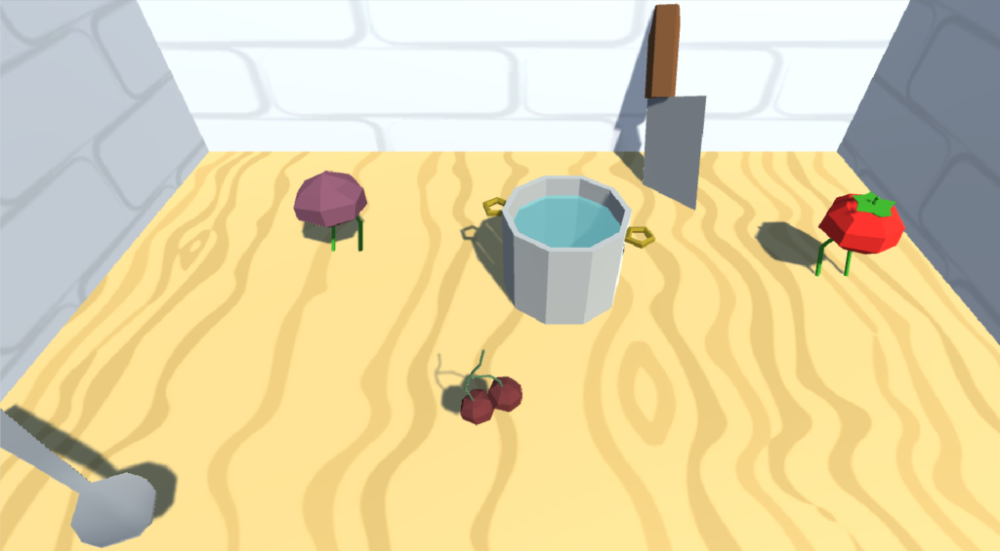
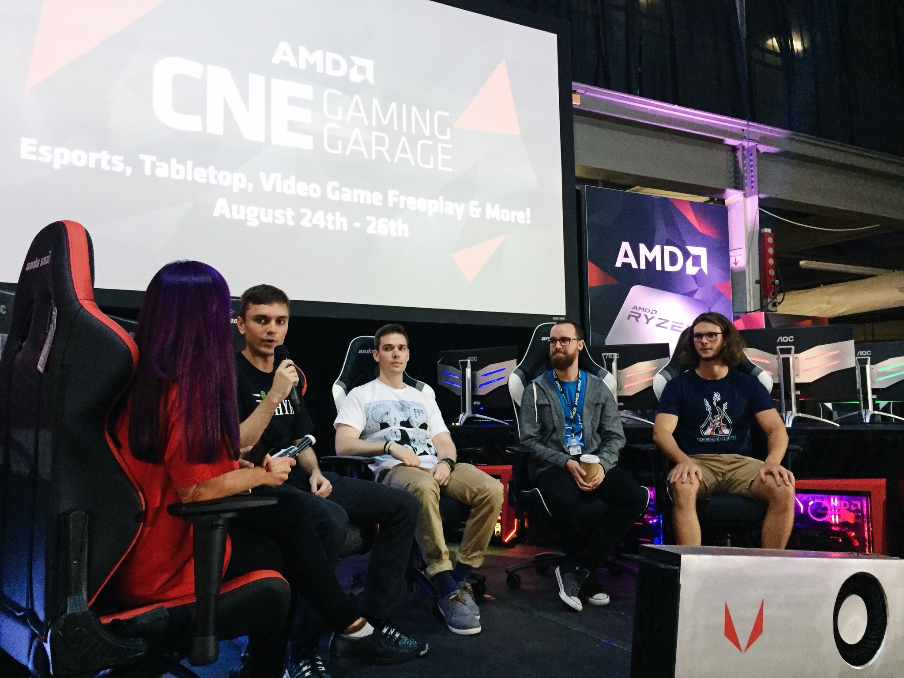

This game was created in the Video Game Design course with the Unity game engine during my final year at the University of Toronto. The course was a collaboration between U of T and OCAD where everyone was divided into teams and expected to deliver a complete game within 4 months in time for the Level Up Showcase to present our games. Each team contained up to 3 artists from OCAD and 3 programmers from U of T, and although we were short one artist, Kitchen Brawl made it to the showcase as a complete game enjoyed by many people wandering through the event.
Kitchen Brawl is a head-to-head cooking game where players cook to get points for their team, or do whatever they can to interfere with the other team's ability to cook. The interfering can be anything from taking the good ingredients first, to mercilessly beating down the opponents in order to prevent them from cooking anything at all. Players do not have to resort to such violence, but for some reason they always do...
On the first day of class, we were told about the process by which the teams would be chosen: every person must individually submit 3 ideas for a game, and out of those ideas, the best 12 would be selected by the professors and the TA. If an idea wins, then the person who submitted it becomes the leader of that group. Everyone else in the class would then pick which group they want to join, with the group leaders getting to make the final decision of who gets to be on their team.
I happened to be one of the lucky few who had an idea good enough to be turned into a game, and here is the 2 sentence submission that started it all:
A local multi-player cooking competition game where the players can do almost anything (fight, steal ingredients, etc) to sabotage their opponent as long as the judge isn't looking. If caught by the judge, that player is eliminated.
Shortly after the game ideas/group leaders were announced, the time had come for everyone else to select groups, and within a few minutes we were already working on our games by implementing a proof-of-concept within 5 hours in the form of a playable demo. In this way, the earliest form of Kitchen Brawl was 2 low-poly vegetables trying to push each other into a pot.
After this point, the development process followed a typical routine:
Since Kitchen Brawl is relatively small in terms of required assets (we didn't have to create huge levels for a single player experience, just a single stage) we really got to focus on polishing the core mechanics. Most of our discussions revolved around the UI and how we would communicate to the player with visual cues so that they know how to play without explanation or a tutorial.
By the time we got to the Level Up showcase, we were confident that the game was ready for the public.
As the project leader of Kitchen Brawl, I was involved with almost every aspect of the development. Our workflow had me in the position where I was responsible for making sure everyone's contributions fit together nicely into a cohesive piece of software, so this included integrating the art assets, refactoring code, and of course writing plenty of original code as well. Officially, I had the final say in what made it into the game, but overall our communication was good enough that I never had to pull that card.
To get more specific on what I worked on, here's a list of areas where I contributed the most:
Because AMD was sponsoring the Level Up Showcase, they let us use one of their beefed up gaming PCs to run Kitchen Brawl in glorious ultra graphical settings. It seemed they liked our game game, since this resulted in our team being invited to another showcase at the AMD building in Toronto, as well as getting us a spot to show Kitchen Brawl at the Science Rendezvous.
While at the AMD event, I was informed that there would be another event sponsored by AMD for which they wanted the Level Up winners to attend, and that was the CNE Gaming Garage. Here, we got a taste of the part of the game development cycle where we sit at a booth and promote our game for 10 hours a day, but the more exciting part of the event was that I got to speak on a panel about my experiences as a student game developer (I'm the one in the white shirt).
At the moment, development on Kitchen Brawl is on hold. Most of the team members (including myself) are too busy to put the same amount of effort in as we did during our class, although I have been ever so slowly refactoring the code in hopes that it can get to a state that's polished enough to put up on Steam.
If anything ever comes of Kitchen Brawl, you would hear about it on our Twitter first.